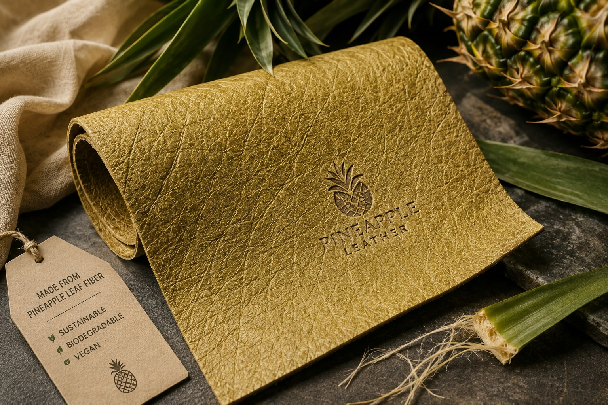

Turning Agricultural Waste into Sustainable Material
Agricultural activities generate large amounts of waste such as crop residues, fibres, and other plant-based materials. Poor management of these wastes can contribute to environmental pollution and the loss of valuable resources (Mujtaba et al., 2023).
At the same time, conventional materials often depend on non-renewable resources, creating a growing need for more sustainable alternatives. Agricultural waste can be converted into useful bio-based materials through suitable chemical treatments and processing methods (Nqoro et al., 2024).
This project focuses on using pineapple leaf fibre (PALF) as a sustainable raw material for developing bio-leather. PALF is a cellulose-rich natural fibre with potential for use in sustainable composite materials (Sethupathi et al., 2024).
The developed material will be evaluated based on tensile strength, water absorption, flexibility, thickness, and biodegradability to assess its performance and potential application.
Overall, the project promotes agricultural waste valorisation by transforming pineapple leaf waste into a value-added material while supporting more sustainable material development (Mujtaba et al., 2023).